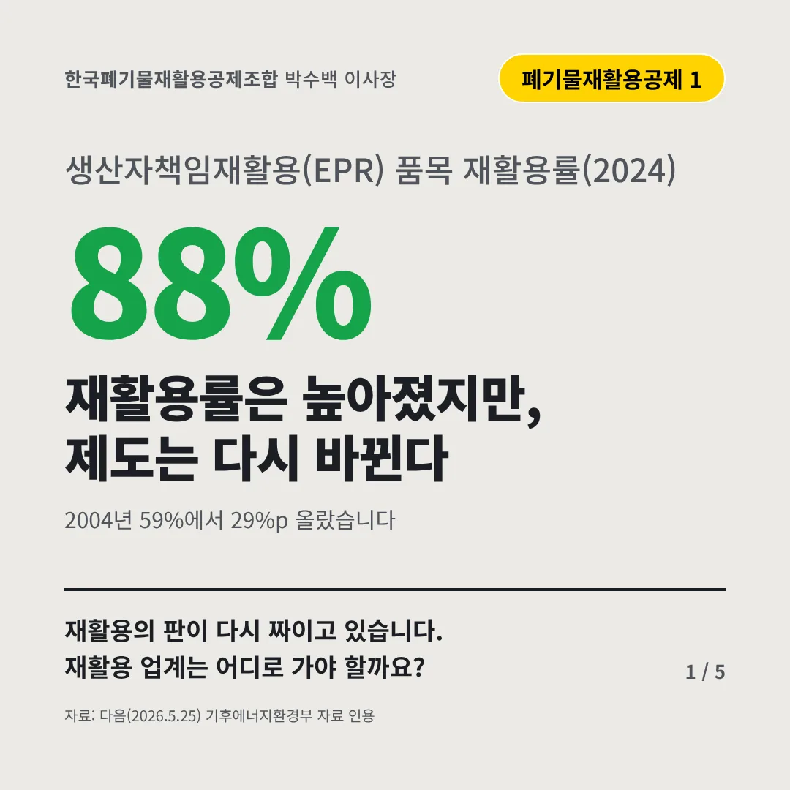
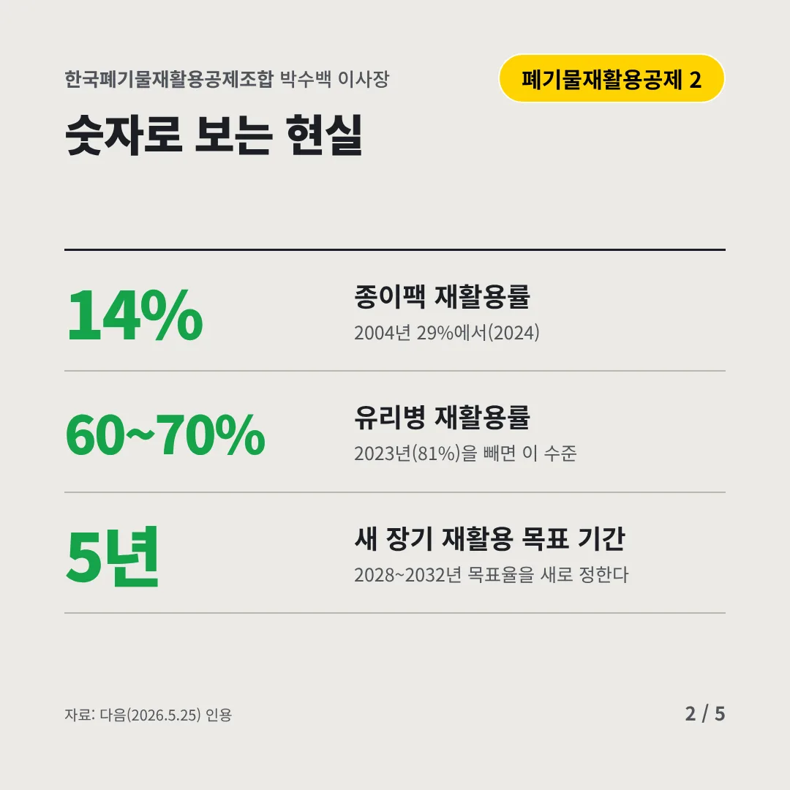
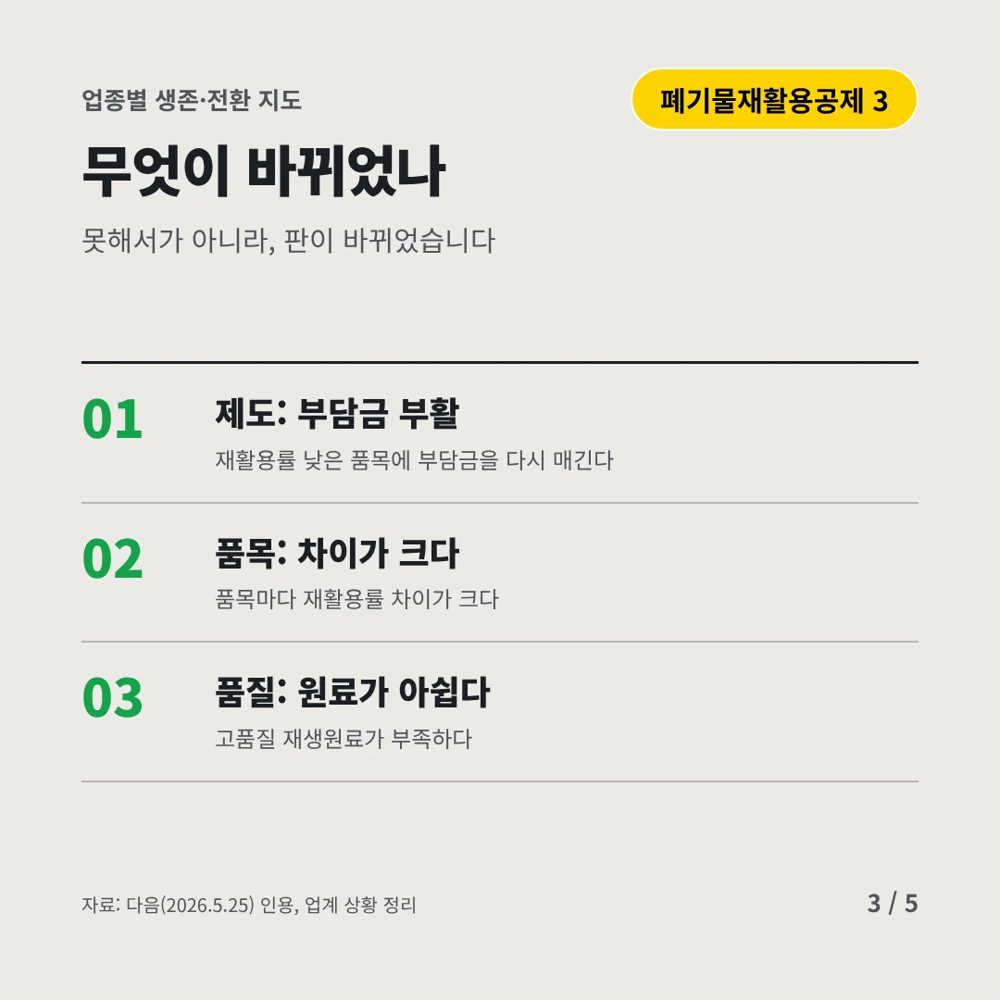
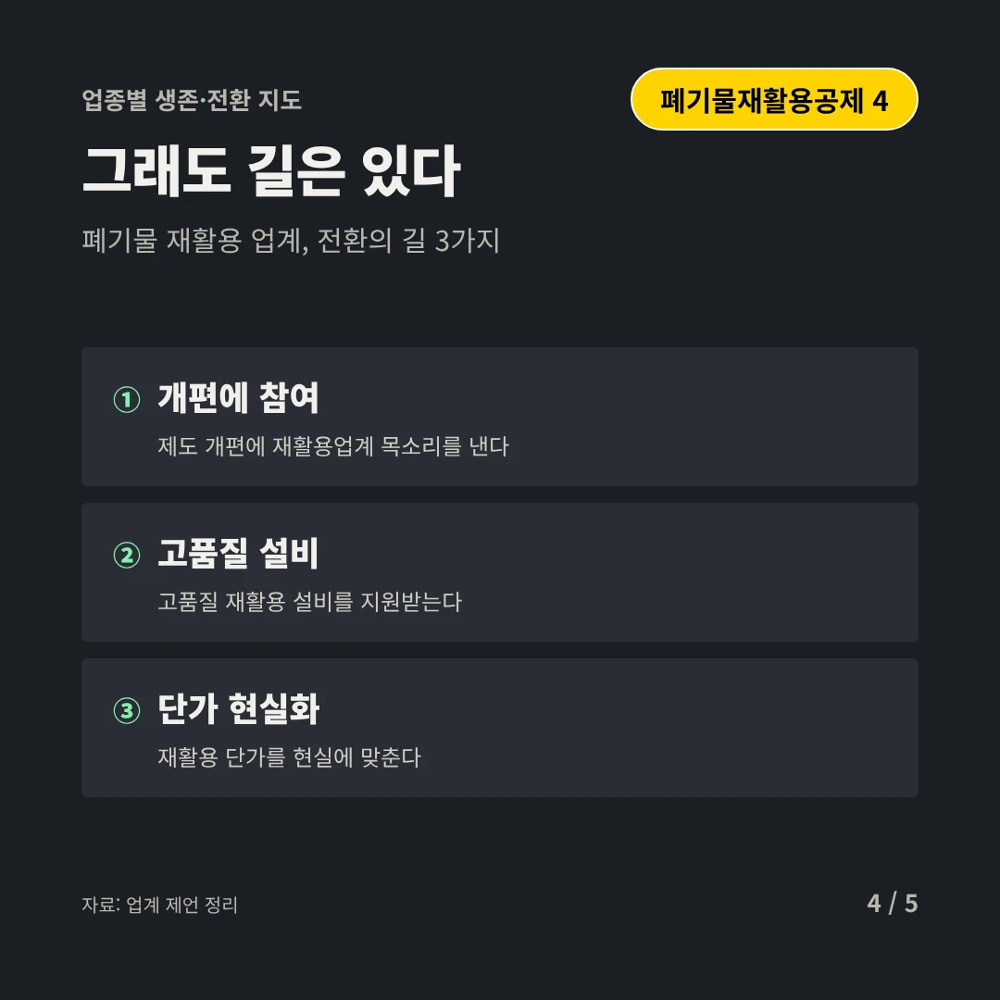
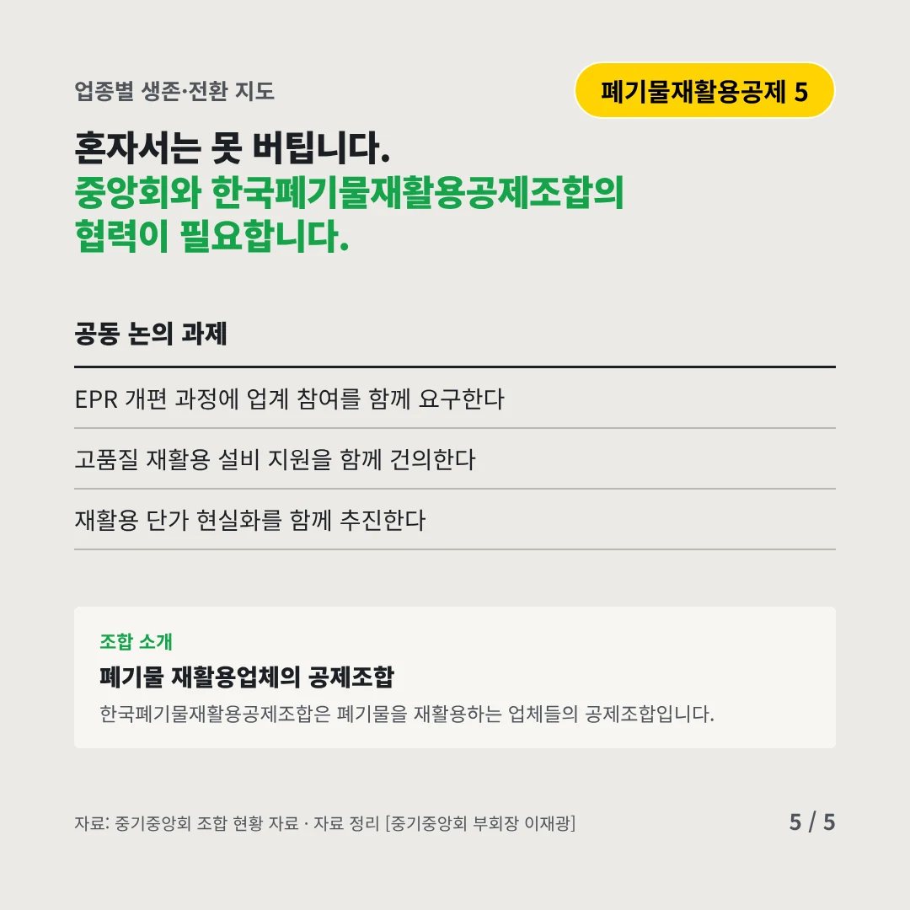
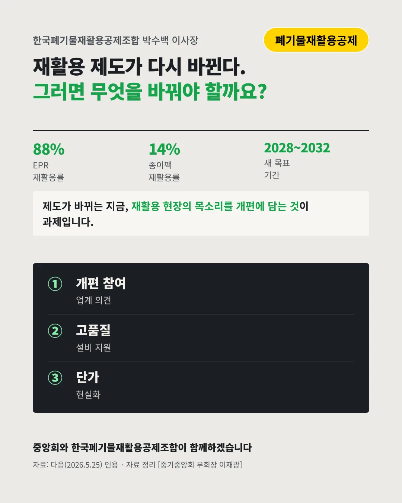

한국폐기물재활용공제조합박수백 이사장
재활용률은 높아졌지만, 제도는 다시 바뀐다
88% 생산자책임재활용(EPR) 품목 재활용률(2024)






재활용의 판이 다시 짜이고 있습니다. 재활용 업계는 어디로 가야 할까요?
숫자로 보는 현실
- 14%종이팩 재활용률2004년 29%에서(2024)
- 60~70%유리병 재활용률2023년(81%)을 빼면 이 수준
- 5년새 장기 재활용 목표 기간2028~2032년 목표율을 새로 정한다
무엇이 바뀌었나
- 제도: 부담금 부활재활용률 낮은 품목에 부담금을 다시 매긴다
- 품목: 차이가 크다품목마다 재활용률 차이가 크다
- 품질: 원료가 아쉽다고품질 재생원료가 부족하다
그래도 길은 있다
- 개편에 참여제도 개편에 재활용업계 목소리를 낸다
- 고품질 설비고품질 재활용 설비를 지원받는다
- 단가 현실화재활용 단가를 현실에 맞춘다
한 장 요약

조합 소개
한국폐기물재활용공제조합은 폐기물을 재활용하는 업체들의 공제조합입니다.
자료: 다음(2026.5.25)